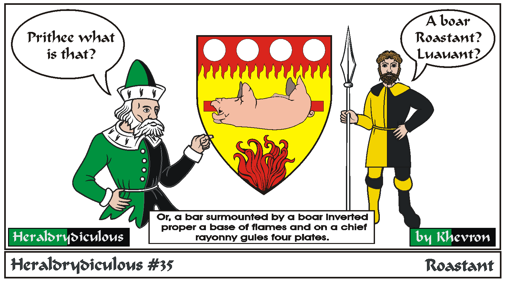
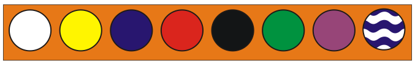

Roastant pig? Not really feasible. Inverting a charge isn't against the rules, but inverting an animate charge is. And making a whole picture
with the charges isn't good style and will be returned. Heraldry shouldn't be "pictures" or "scenes", but a pattern of
identifiable charges that any herald could blazon or reasonably draw from the blazon.
Roundels of all colors have specific names. Argent=Plate, Or=Bezant (gold coin), Azure=Hurt, Gules=Torteau,
Sable=Gunstone, Pellet or Ogress, Vert=Pomme, Purpure=Golpe, Barry wavy azure and argent=Fountain.

Back to Khevron's Heraldry Page